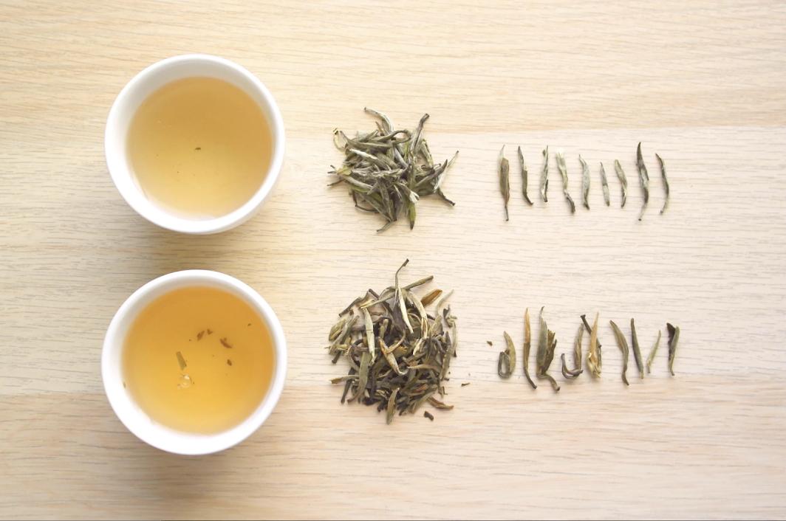

Home
White Tea

White tea is vast and there are many different types. Of course, this is true
of pretty much every type of tea. White teas are delicate, so must be handled with
some care when brewing. However, this careful attention will pay off, as you will
often be rewared with a light yet flavorful cup.
Ingredients
- Water (filtered is preferable)
- White Tea (I recommend a Silver Needle)
Tools
- Kettle
- Tea Pot & Tea Cups
- Food Scale (optional)
Directions
- Heat water in kettle to 185° fahrenheit / 85° celsius
- Measure leaves - I prefer 2 grams of leaves per 200ml of water
but feel free to adjust to your tastes
- Place leaves in teapot and pour the heated water over the leaves
- Let steep for 4 minutes
- Strain the tea into cups and serve